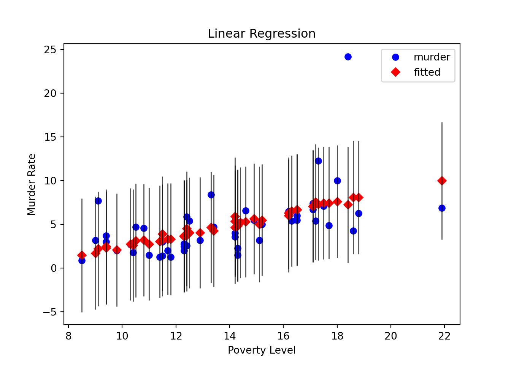

import matplotlib.pyplot as plt
import numpy as np
import statsmodels.api as sm
data = sm.datasets.statecrime.load_pandas().data
murder = data['murder']
X = data[['poverty', 'hs_grad']].copy()
X['constant'] = 1
y = murder
model = sm.OLS(y, X)
results = model.fit()
# Create a plot just for the variable 'Poverty':
fig, ax = plt.subplots()
fig = sm.graphics.plot_fit(results, 0, ax=ax)
ax.set_ylabel("Murder Rate")
ax.set_xlabel("Poverty Level")
ax.set_title("Linear Regression")
plt.show()